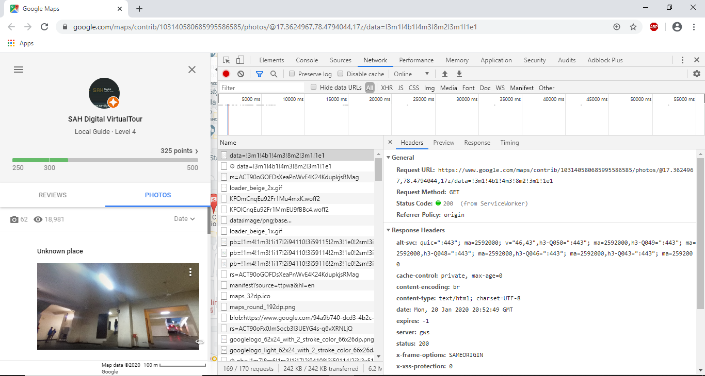

Google Maps Photos Contribution Count
Check Local Guide Current Contribution on Map
Photos - 0
Views - 0
Check your own LocalGuide Contributions
Your Count
Photos - 0
Views - 0
Steps get your own contirbution counts
- 1. Go to your google map id and click on photos tab on the left panel
- 2. Open Inspect Element and goto Click on Network tab. And Click on the first link which contains request url in header and response Text.

- 3. Copy the Request url from the header tab.
- 4. Click on Response Tab. and search the number of views in the response text as show in the picture below.(if the number of views is less than 3 or 4 digits then you will have to do a bit more work to do. mostly the unicode which we need is in the line no. 146.)
- 5. Copy the sequence of characters which is in between the number of photos and number of view you have. that all you need.